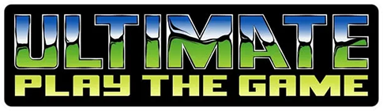

Ultimate Play The Game
Ultimate Play The Game were, without exaggeration, the most innovative and influential developer of the Spectrum’s early years. Their games redefined what the machine was capable of. When Ultimate released something, the gaming press raved, players queued, and rival publishers scrambled to catch up. The Filmation titles in particular — Knight Lore, Alien 8, Nightshade — were treated like revelations, introducing isometric worlds and technical wizardry that seemed impossible on a humble 48K Speccy. Where Ultimate led, everyone else tried to follow, with… let’s say… mixed results.
Their games appeared on several systems — including the Amstrad CPC, BBC Micro, MSX and Commodore 64 — but for me, the real magic lies in the sixteen Spectrum titles that defined their legacy. Those are the games I’m showcasing here.

An Introduction to Ultimate Play The Game
From 1983 to 1987 one software house set the trends that others followed. 16 releases in 5 years established Ultimate as the premier games company for the Sinclair ZX Spectrum.
They were the first company who could boast “arcade quality graphics” without embarrassment. They shunned the computer press rarely giving Interviews and appearing at only one Microfair. The lack of hype worked to their advantage, in an industry which seemed founded on outlandish promises and humble products.
Ultimate pioneered the technique they called Filmation, and almost all their post Knight Lore games use this process in one way or another. It is easy to forget that they managed this in a mere 48K of RAM whilst retaining those crisp, smooth graphics and excellent playability.
Taken over by US Gold in 1986, the company continued to receive rave reviews for their products up until the last two releases.

LOAD "Further Reading"
A Brief History of Ultimate Play The Game - A brief introduction to the company
The Collected Works Interview - An interview with UPTG from the packaging for The Collected Works
The Best of British - Ultimate's first interview with the computing press
AC&G Employee Speaks - Interview with an ex UPTG Employee
Rare Interview - An interview with the Rare team from EDGE (1997)
Playing a Rare Game - An article/interview about UPTG from 'The Games Machine', March 1988
Myths & Legends - The rumours and hearsay that keep us talking about Ultimate